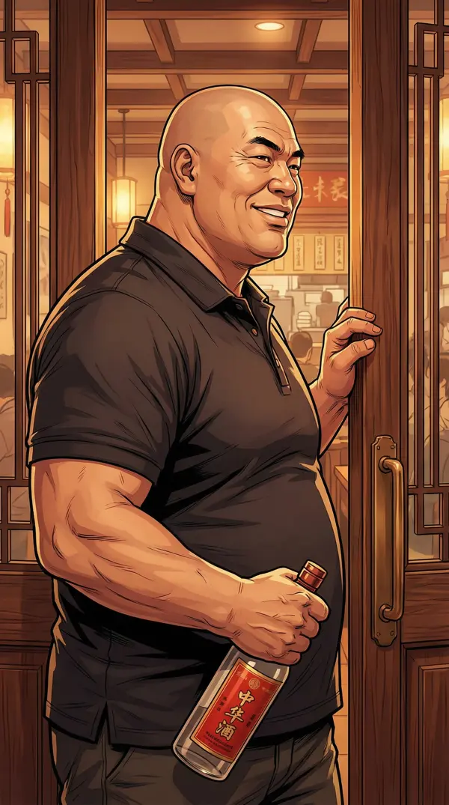
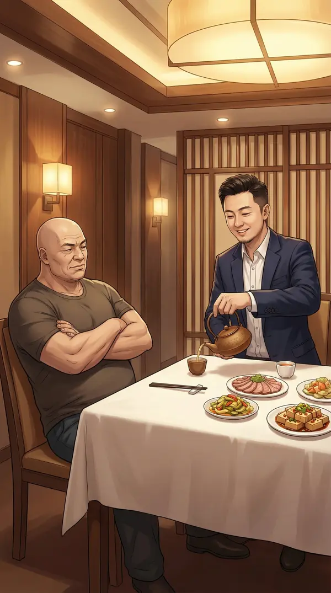
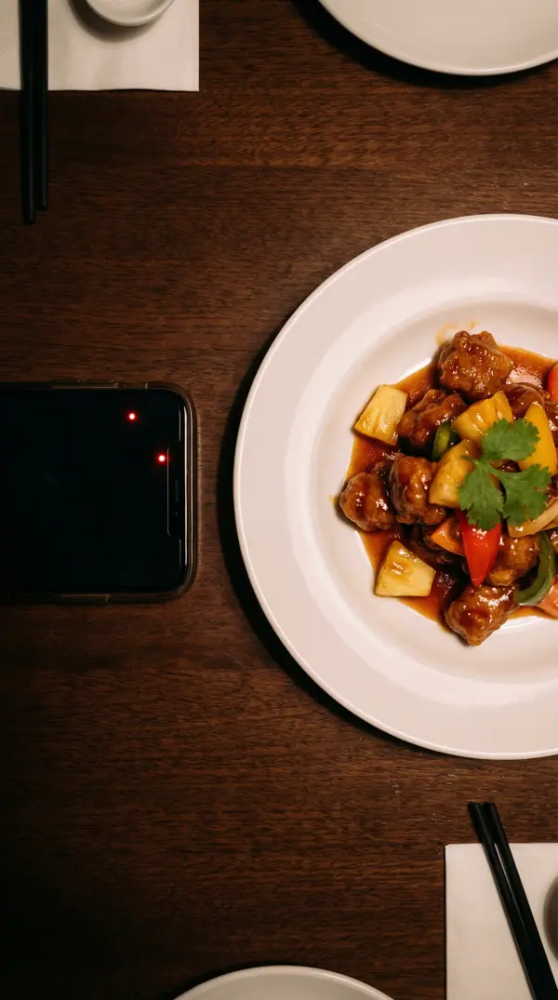
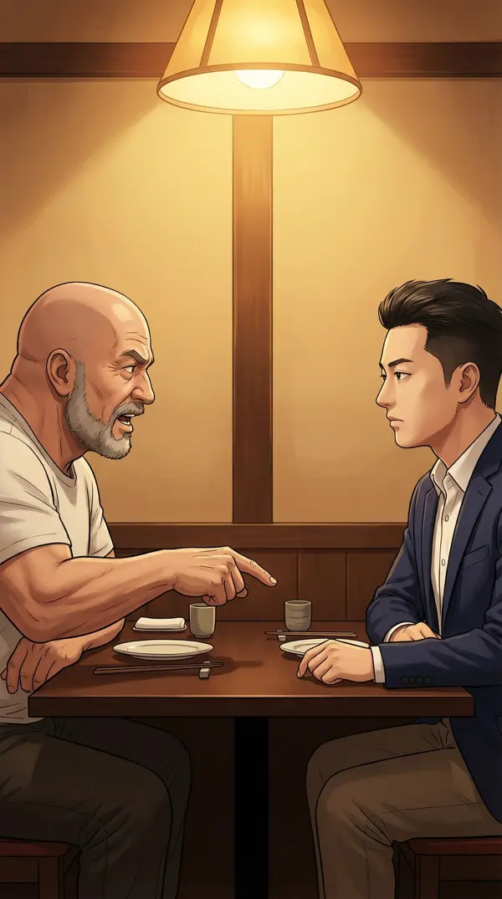
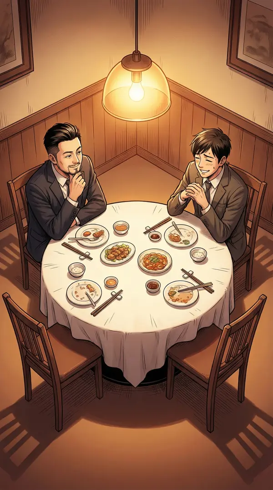
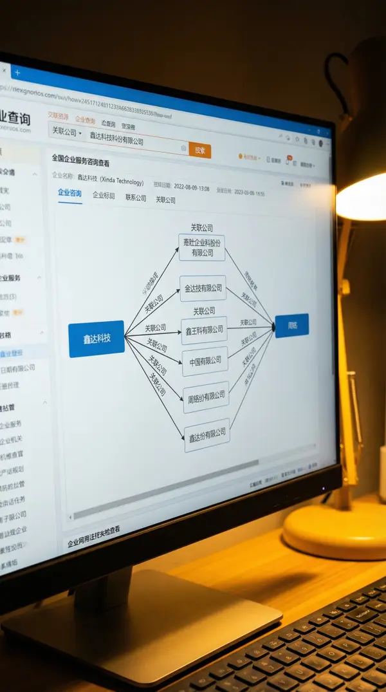
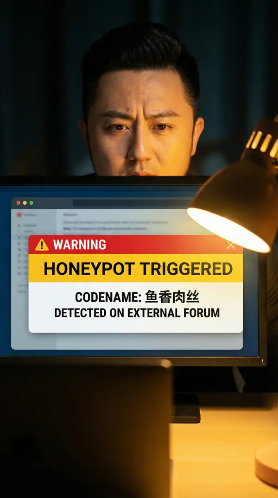
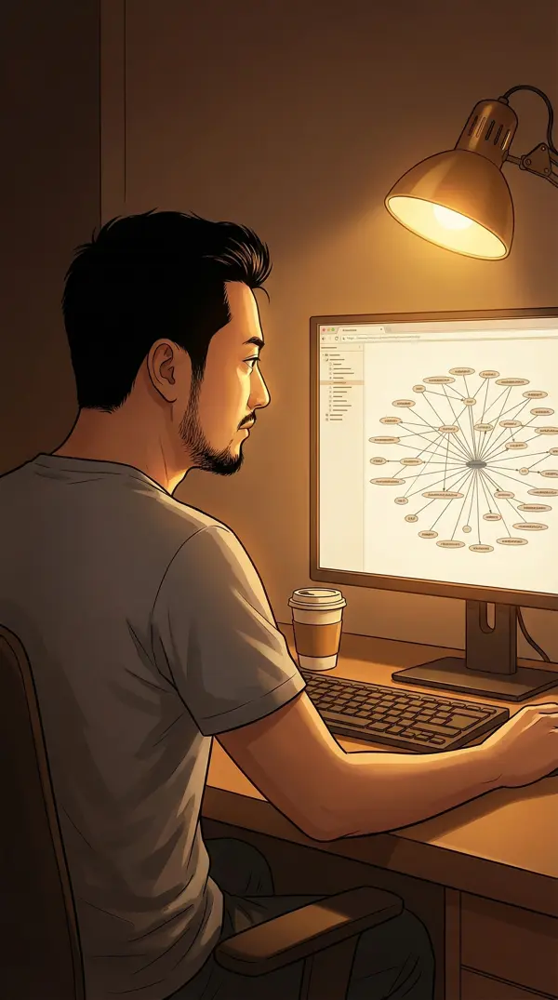
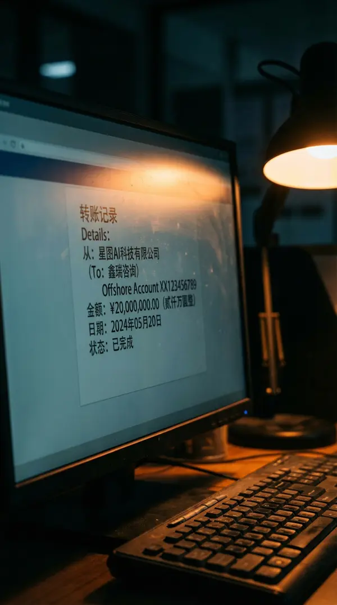

第二章
饭局博弈
源代码战争
前情提要：我发现核心AI模型代码被泄露给竞对星图AI。通过蜜罐和逆向工程，追踪到投资人老张的私人服务器。老张约了一顿饭——今天中午。
↓ 向下滑动
早上七点半，阳光透过窗帘打在我脸上。手机上还留着老张昨晚打来的通话记录——23:47，通话时长4分32秒。旁边的笔记本屏幕上，是我通宵整理的数据流截图。
林薇发来消息："查到了，老张三个月前新注册了一家壳公司，和星图AI有间接股权关系。持股链是老张→鑫达科技→周铭→星辰投资→星图AI。"
证据链还差最后一环——动机。五十万投资换一个估值两亿的公司核心代码？老张不是这么小气的人。一定有更大的局。
T恤太随意——像是去网吧不是谈事。西装太刻意——等于告诉对方我在防备他。
最后选了件商务休闲外套——不远不近刚刚好。对着镜子整理领口，突然想起当年熬夜破解游戏外挂的时候，穿着拖鞋和睡裤就干了……那时候不需要想穿什么。
悦华楼，老张选的地方。包间不大，但装修讲究——暖黄灯光，深色木桌，白瓷餐具。这种地方一顿饭少说两千。我先到了十分钟。
发了条朋友圈："难得吃好的。"看起来是分享日常，实际上——是给自己留个时间戳。如果后面出事，这条朋友圈能证明我当时在哪。
趁没人，把包间每个角落扫了一遍——灯罩下面、花瓶里、桌底。确认没有录音设备后，我打开手机录音。
每一个好的渗透测试，都从目标以为安全的地方开始。今天这顿饭——我是白帽，老张是待测系统。
🎯 决策点三：饭局策略
A. 主动出击，旁敲侧击试探老张
B. 设信息陷阱，说假消息观察反应
C. 装傻充愣，让老张先露底牌
▸ 我选B——信息陷阱
黑客思维的核心是"布局+观察"。渗透测试不是硬攻，是让目标自己暴露漏洞。

门推开的声音很大。老张就是这种人——不管到哪儿，气场先到。光头锃亮，深色POLO衫，手里还拎着一瓶酒。
"小朱！公司最近忙吧？我看你朋友圈都不怎么发了。"老张的大嗓门让我耳朵嗡了一下。

我笑着倒茶："张总，忙是真忙。模型最近在做新一轮优化，效果很猛。"假信息A——投出去了。
"哦？什么方向的优化？"他直接问技术方向。正常投资人会问"效果怎么样"或"对融资有帮助吗"。他在替陈启明收集情报。
服务员小妹推门进来添茶，恰好撞上老张那声雷似的大笑——茶壶差点失手。我看见她默默深呼吸了一下才稳住。
我假装不经意地说："对了张总，我们打算下周在demo day展示一个新功能——实时多模态推理。还没对外说，您知道就行。"假信息B——完全虚构的功能名称。
这是我的金丝雀。如果老张是干净的，这信息就石沉大海。如果他传给陈启明——捉虫成功。
"多模态啊，现在都在做这个。需要我帮你对接几个大模型的人？"他在持续追问。典型的数据采集行为。

手机安静地录着。每一句对话都是日志，每一个反应都是数据点。
老张放下筷子，表情突然从闲聊切换到谈生意模式："朱江，我今天来是有个好消息——有个新的战略投资人想进来，给你们估值翻一倍。"
我夹菜的筷子停了零点五秒。估值翻一倍。听起来很美。

"但他有个条件——要看核心技术架构文档。"这就是他的新渠道。从暗偷变明抢。
"暂时保密，等你点头了再引荐。"不说名字。意料之中——说了我两分钟就能查出和陈启明的关系。
我故意大口吃了一块红烧肉——嚼得很慢，看起来像在认真考虑他的提议。其实我在组织语言。而且……这红烧肉确实挺好吃。
🎯 决策点四：回应老张的提议
A. 当场拒绝——"核心架构文档不能给外人看"
B. 假装心动，顺着鱼线找鱼
C. 提条件——"可以看，但我要先见人"
▸ 我选B——假装心动，反向追查
创业者+黑客双重本能：表面热情配合，暗中顺藤摸瓜。不打草惊蛇是基本素养。
"张总，估值翻倍这种好事，我当然愿意！您让对方把投资意向书发过来，我安排团队对接。"
老张脸上闪过一丝得意。那种"搞定了"的表情。他以为自己在钓鱼——不知道谁才是鱼。

两个人都在笑。饭局就是这样——表面上把酒言欢，桌子底下全是博弈。
老张开着他那辆黑色奔驰走了。我站在路边，阳光晃得眯眼。拨了林薇的电话。
"他咬钩了。那个'战略投资人'肯定是陈启明的马甲。你帮我查一下，老张最近三个月有没有和陈启明同时出现在同一个地方的记录。"
林薇问我要不要报警。"还不够。我要的不是让他被抓——是让他主动把整个链条交出来。"好的exploit不是暴力破解，是让目标自己打开门。
晚上十一点。书房的台灯打着暖光，屏幕上是老张壳公司"鑫达科技"的工商注册信息。开始挖。

鑫达科技→三家关联公司→最终法人代表→一个名字：周铭。前投行高管，三年前创办"科技咨询公司"。这家公司没有任何实际业务——只有和星图AI的关联交易。
"找到了。这不是什么战略投资人——这是陈启明的白手套。"

就在这时——蜜罐触发了！第一章埋下的金丝雀陷阱。每个团队成员的代码仓库里，我按他们爱点的外卖口味命名了不同水印。现在，"鱼香肉丝"出现在了暗网的一个技术论坛里。
"鱼香肉丝"对应的人是——公司前台小李。
"……前台也能接触代码仓库？"
林薇秒回："上周服务器搬迁，临时给全员开了admin权限……忘记收回了。"
"…………"

凌晨两点，所有证据串成了一条完整的链：
入口：小李的admin账号→提权：老张远程利用→数据渗出：老张私人服务器→变现：星图AI/陈启明→洗白：周铭壳公司。
完整的exploit chain。
林薇在视频通话里看着我画的关系图，沉默了三秒："……你把一起商业间谍案，分析成了一份安全漏洞报告。"
"本来就是。人的系统和计算机的系统没有本质区别——都有入口，都有漏洞，都可以被patch。"
但还有一个问题没解开——动机。老张投了我们五十万，出卖我们能拿到什么？一定有比五十万大得多的东西。

翻开林薇搞到的周铭公司财务流水，一笔转账跳入眼帘——两千万。从星图AI，经周铭公司，最终进入老张的一个离岸账户。
两千万。五十万投资人出卖被投企业，拿到四十倍回报。
然后我注意到转账备注——"一期款"。
一期。这意味着还有二期。还没完。
手机突然震了一下。
陈启明——星图AI的老板——亲自发来好友申请："朱总，久仰。听说你们的模型很有意思。方便这周聊聊吗？"
我盯着这条消息。他不是来聊天的——他知道我在查他了。
猎人变成了猎物？还是说……这本来就是一个更大的局？
"一期款"的二期是什么？老张是唯一的内鬼，还是只是其中之一？
我没有删掉这条好友申请。
好戏……才刚刚开始。
第二章完
陈启明主动接触——对方已知被追查。
是摊牌，还是另一个陷阱？
第三章：暗网交易——即将揭晓